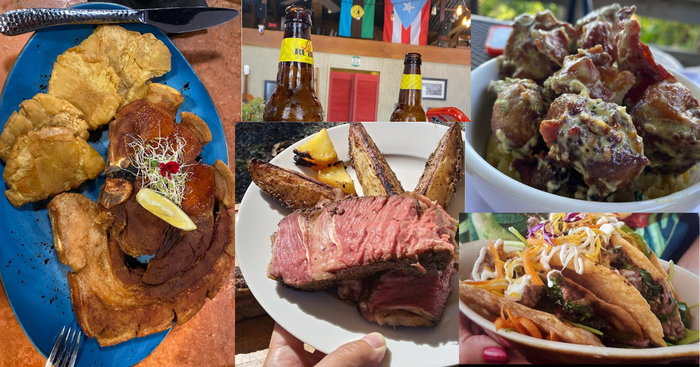
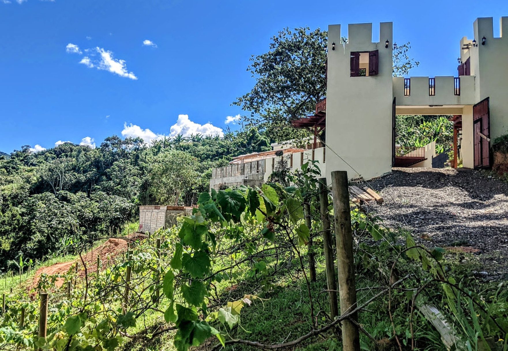
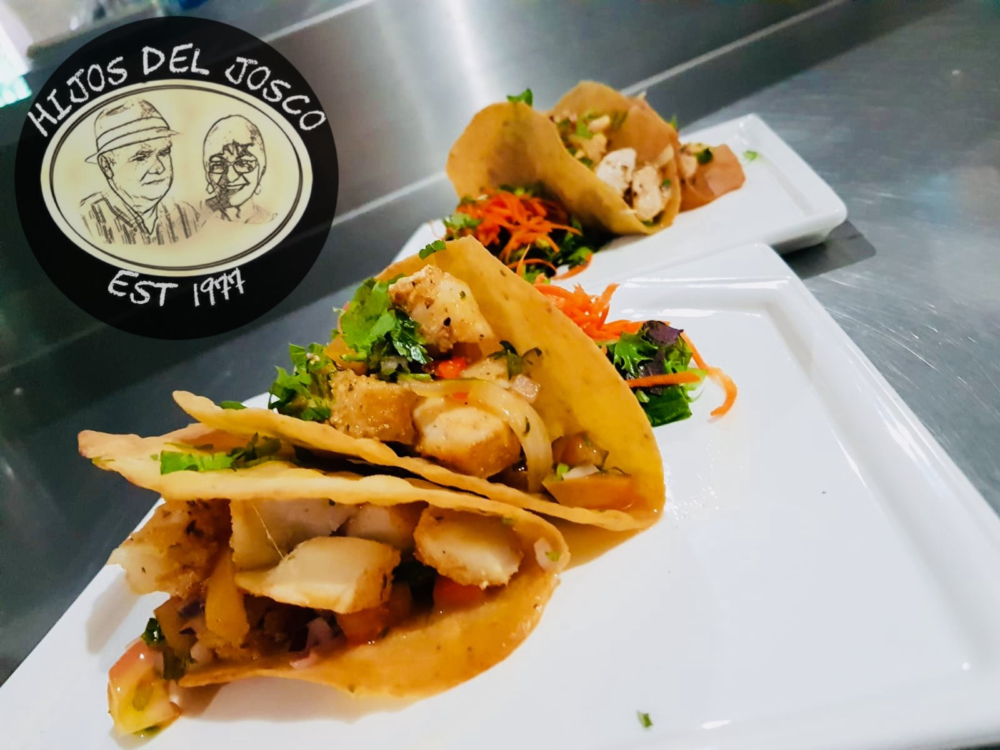

Gastronomía
Utuado ofrece una gran oferta gastronómica caracterizada por sus platos tradicionales y sabores auténticos del campo puertorriqueño.
En este municipio es común encontrar chinchorros y restaurantes locales donde se sirven platos típicos como arroz con gandules, lechón asado y frituras.
Muchos de estos lugares están ubicados cerca de la naturaleza, brindando una experiencia única a los visitantes.


